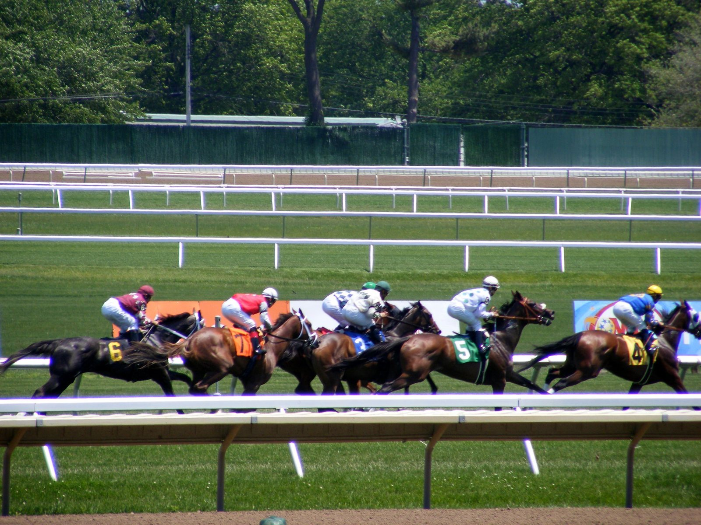

Yedsit Hazlewood, operado del codo derecho, estará de baja «unos meses»
El jockey Yedsit Hazlewood, de 18 años, pasó por el quirófano tras fracturarse el codo derecho en una caída sufrida el 6 de octubre en Horseshoe Indianapolis.

La intervención salió bien. Así lo comunicó por mensaje su agente, Cliff Collier: «Está de vuelta en su casa de Delaware y probablemente se perderá unos meses hasta que se cure. Los primeros días en el hospital tuvo muchos dolores, pero cada día gana movilidad».
La baja le llega con 214 victorias en lo que va de año, 184 de ellas como aprendiz. Hazlewood perdió el descargo de aprendiz el 28 de junio, pero sigue siendo el principal candidato a proclamarse campeón de aprendices este año.
El año pasado ya rozó ese reconocimiento: fue segundo en la votación del Eclipse Award al mejor aprendiz.
Antes de trasladarse a Kentucky, el joven jockey se había impuesto en el circuito de Maryland.
Por Martín Larrañeta